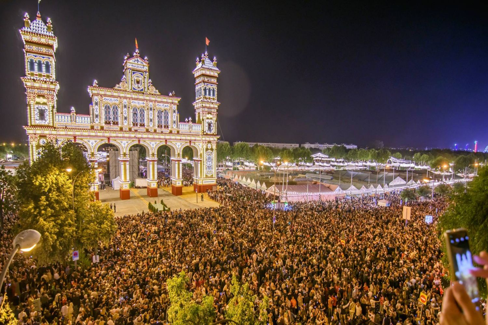

|
 |
The Seville Fair (officially and
in Spanish: Feria de Abril de Sevilla, "Seville April Fair") is held in
the Andalusion capital of seville, spain. The fair generally begins two
weeks after the semana santa, or Easter Holy Week. The fair officially
begins at midnight on Saturday, and runs seven days, ending on the
following Saturday. Each day the fiesta begins with the parade of
carriages and riders, at midday, carrying Seville's leading citizens
which make their way to the bullring,la real maestranza where the
bullfighters and breeders meet. |